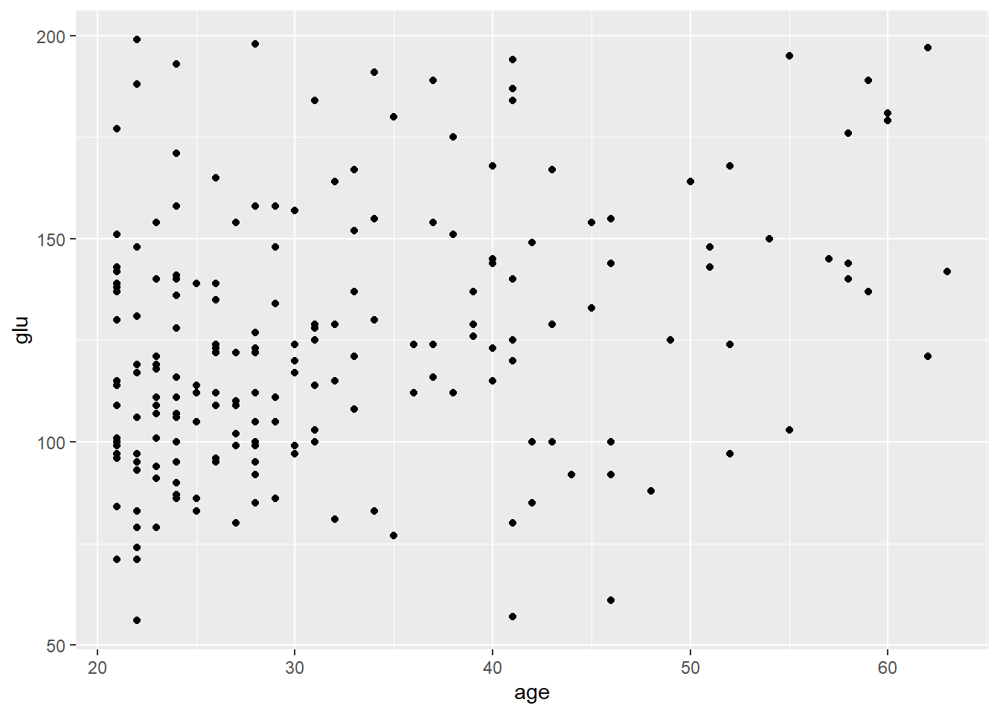
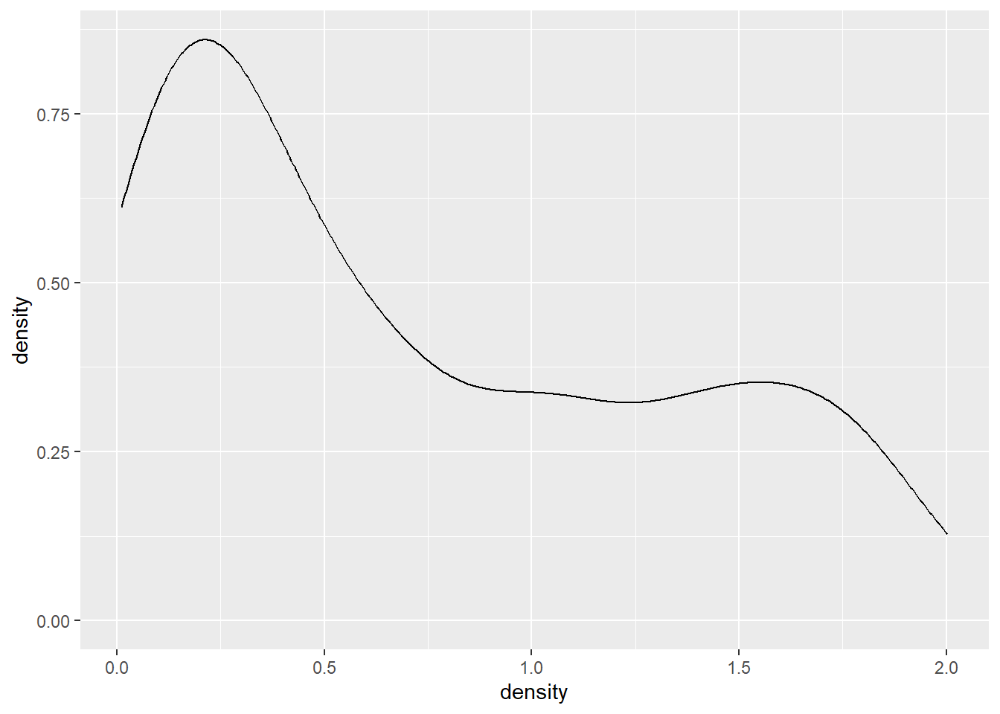
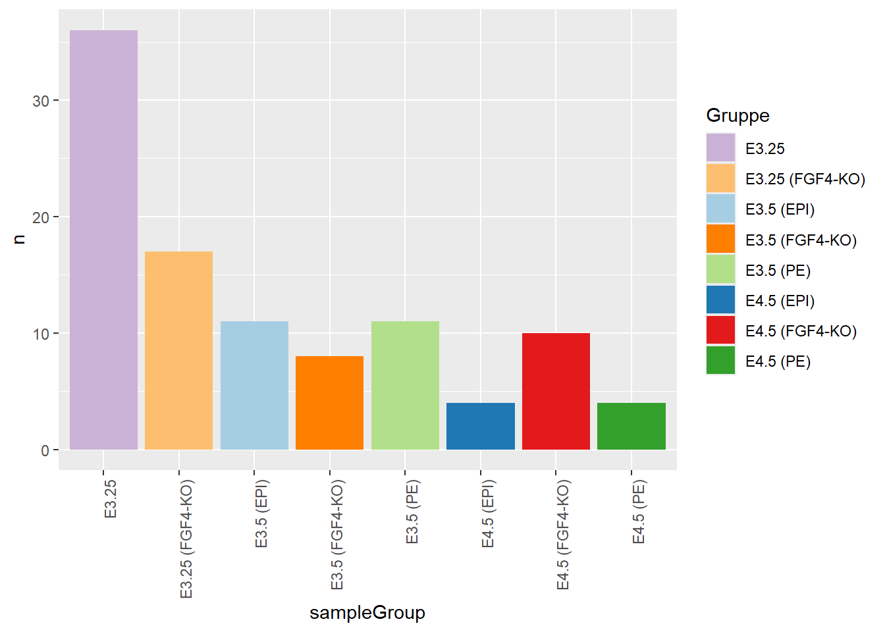

den Unterschied zwischen explorativer und erklärender Datenvisualisierung beschreiben,
einfache Grafiken mit ggplot2 erstellen,
die Grundidee der Grammar of Graphics erklären,
Variablen auf visuelle Eigenschaften wie Position, Farbe, Form oder Größe abbilden,
geeignete Diagrammtypen für eindimensionale und zweidimensionale Daten auswählen,
Facetten, Farben, Achsenskalierungen und Themes gezielt einsetzen,
Grafiken reproduzierbar speichern.
6.2 Warum Daten visualisieren?
Datenvisualisierung hat in der Statistik und Datenanalyse zwei zentrale Aufgaben.
Erstens hilft sie bei der Exploration. Bevor formale Modelle oder Tests eingesetzt werden, können Grafiken zeigen, welche Muster, Ausreißer, Gruppenunterschiede oder Zusammenhänge in den Daten vorhanden sind.
Zweitens dient Visualisierung der Kommunikation. Eine gute Grafik fasst eine Aussage so zusammen, dass andere sie schnell verstehen können. Dabei geht es nicht nur darum, eine „schöne“ Grafik zu erzeugen, sondern darum, eine inhaltliche Aussage klar und ehrlich zu vermitteln.
Beispielhafte Fragen, die man mit Visualisierungen untersuchen kann:
Wie ist eine Variable verteilt?
Gibt es Ausreißer?
Hängen zwei Variablen zusammen?
Unterscheiden sich Gruppen voneinander?
Gibt es nichtlineare Zusammenhänge?
Gibt es Muster, die in einer Tabelle schwer erkennbar wären?
6.3 Erstes Beispiel: Patientendaten aus der Medizin
Für den Einstieg verwenden wir einen echten medizinischen Beispieldatensatz: Pima.tr aus dem Paket MASS. Der Datensatz enthält Gesundheitsdaten von Frauen des Pima-Volks nahe Phoenix. Er wird häufig für Beispiele zur Diabetesklassifikation verwendet.
Jede Zeile beschreibt eine Person mit mehreren medizinischen Messwerten, darunter Alter, Body-Mass-Index, Blutdruck, Glukosewert und Diabetesstatus.
library(MASS)data(Pima.tr)head(Pima.tr)
npreg glu bp skin bmi ped age type
1 5 86 68 28 30.2 0.364 24 No
2 7 195 70 33 25.1 0.163 55 Yes
3 5 77 82 41 35.8 0.156 35 No
4 0 165 76 43 47.9 0.259 26 No
5 0 107 60 25 26.4 0.133 23 No
6 5 97 76 27 35.6 0.378 52 Yes
Der Datensatz enthält unter anderem:
Variable
Bedeutung
npreg
Anzahl der Schwangerschaften
glu
Glukosekonzentration
bp
diastolischer Blutdruck
skin
Hautfaltendicke
bmi
Body-Mass-Index
ped
Diabetes-Pedigree-Funktion
age
Alter in Jahren
type
Diabetesstatus: Yes oder No
Mit str() können Sie sich die Struktur des Datensatzes ansehen:
Gibt es in diesen Daten einen Zusammenhang zwischen Alter, Glukosewert und Diabetesstatus?
Dieser Datensatz ist klein genug für den Einstieg, aber realistisch genug, um typische Visualisierungsfragen aus der medizinischen Datenanalyse zu behandeln.
6.4 Erste Grafiken mit Base R
R besitzt eingebaute Grafikfunktionen, zum Beispiel plot(), hist() oder boxplot().
plot(Pima.tr$age, Pima.tr$glu)
Dieser Plot zeigt den Zusammenhang zwischen Alter und Glukosewert. Die Darstellung ist schnell erstellt, aber noch wenig beschriftet.
Eine etwas bessere Variante ist:
plot( Pima.tr$age, Pima.tr$glu,xlab ="Alter in Jahren",ylab ="Glukosekonzentration",pch =19,col ="blue")
Auch Histogramme und Boxplots sind mit Base R möglich:
hist(Pima.tr$glu, breaks =20, main ="Verteilung der Glukosewerte")
Das Histogramm zeigt die Verteilung der Glukosewerte. Mit breaks lässt ich beeinflussen, wie fein oder grob die Verteilung dargestellt wird.
Der Boxplot vergleicht die Glukosewerte zwischen Personen mit und ohne Diabetesdiagnose.
boxplot(glu ~ type, data = Pima.tr)
Base R eignet sich gut für schnelle explorative Grafiken. Sobald Grafiken aber komplexer werden, zum Beispiel mit mehreren Gruppen, Farben, Legenden, Achsenanpassungen und Teilgrafiken, wird der Code oft unübersichtlich.
6.5 Von Base R zu ggplot2
ggplot2 verfolgt einen anderen Ansatz. Man beschreibt nicht Schritt für Schritt, wo etwas gezeichnet wird, sondern formuliert, welche Variablen wie dargestellt werden sollen.
Zuerst laden wir das Paket:
library(ggplot2)
Warning: Paket 'ggplot2' wurde unter R Version 4.4.3 erstellt
Der einfache Scatterplot aus Base R sieht in ggplot2 so aus:
ggplot(Pima.tr, aes(x = age, y = glu)) +geom_point()
Dieser Code bedeutet:
Verwende den Datensatz Pima.tr.
Trage age auf der x-Achse ab.
Trage glu auf der y-Achse ab.
Stelle die Beobachtungen als Punkte dar.
6.6 Die Grundidee von ggplot2
Das Paket ggplot2 basiert auf der Idee der Grammar of Graphics von Leland Wilkinson. Die zentrale Frage dahinter lautet nicht: „Welchen Diagrammtyp möchte ich zeichnen?“, sondern:
Aus welchen Bausteinen besteht eine Grafik?
Vor der Grammar-of-Graphics-Idee wurden Grafiken häufig als feste Diagrammtypen verstanden, zum Beispiel als Balkendiagramm, Liniendiagramm, Streudiagramm oder Boxplot. Wilkinson schlug dagegen vor, Grafiken wie eine Sprache zu betrachten. So wie ein Satz aus Wörtern und grammatischen Regeln aufgebaut ist, kann auch eine Grafik aus einzelnen Komponenten zusammengesetzt werden. Wenn uns diese Elemente bekannt sind, können wir Grafiken besser verstehen und verändern.
Die Grammar of Graphics unterscheidet die folgenden Komponenten:
Komponente
Bedeutung
Daten
Der Datensatz, der visualisiert werden soll
Ästhetiken
Zuordnung von Datenvariablen zu visuellen Eigenschaften, z. B. Achsenposition, Farbe, Form
Geometrien
Die Art der Darstellung, z. B. Punkte, Linien, Balken
Statistiken
Berechnungen auf den Daten, z. B. Zählen, Glätten oder Binning
Skalen
Umsetzung von Datenwerten in Achsen, Farben oder Größen
Koordinaten
Koordinatensystem, meistens kartesisch
Facetten
Aufteilung in mehrere Teilgrafiken
Theme
Gestaltung, z. B. Schriftgrößen, Hintergrund, Legende
ggplot2 überträgt diese Idee auf R. Das Paket wurde von Hadley Wickham entwickelt und macht die Grammar of Graphics praktisch nutzbar. Eine Grafik wird dabei schrittweise aufgebaut. Man beginnt mit den Daten, legt dann fest, welche Variablen auf welche ästhetischen Eigenschaften abgebildet werden, und ergänzt anschließend die gewünschte Darstellungsform.
Ein einfacher ggplot besteht meistens aus drei Teilen:
ggplot(data = DATENSATZ, aes(x = VARIABLE1, y = VARIABLE2)) +geom_...()
Beispiel:
ggplot(data = Pima.tr, aes(x = age, y = glu)) +geom_point()

6.7 Ästhetiken: Variablen sichtbar machen
Die Funktion aes() beschreibt, welche Variable auf welche visuelle Eigenschaft abgebildet wird.
ggplot(Pima.tr, aes(x = age, y = glu)) +geom_point()
Hier werden zwei Variablen verwendet:
age: Position auf der x-Achse
glu: Position auf der y-Achse
Zusätzlich kann eine dritte Variable über Farbe dargestellt werden:
ggplot(Pima.tr, aes(x = age, y = glu, color = type)) +geom_point(size =3)
Hier zeigt die Farbe den Diabetesstatus (type).
Typische Ästhetiken sind:
Ästhetik
Bedeutung
x
Position auf der x-Achse
y
Position auf der y-Achse
color
Farbe von Linien oder Punkten
fill
Füllfarbe, z. B. bei Balken oder Boxplots
shape
Symbolform
size
Größe
alpha
Transparenz
linetype
Linientyp
Wichtig ist die Unterscheidung zwischen Eigenschaften innerhalb und außerhalb von aes().
Wenn eine Eigenschaft von einer Variable abhängen soll, steht sie innerhalb von aes():
ggplot(Pima.tr, aes(x = age, y = glu, color = type)) +geom_point()
Wenn eine Eigenschaft für alle Punkte gleich sein soll, steht sie außerhalb von aes():
ggplot(Pima.tr, aes(x = age, y = glu)) +geom_point(color ="blue")
6.8 Geometrien: Wie sollen die Daten dargestellt werden?
Die Geometrie legt fest, welche grafischen Objekte verwendet werden. In ggplot2 werden diese grafischen Objekte mit Funktionen beschrieben, die mit geom_ beginnen. Beispiele sind geom_point() für Punkte, geom_line() für Linien, geom_histogram() für Histogramme oder geom_boxplot() für Boxplots.
Als Beispieldatensatz verwenden wir im Folgenden den Datensatz DNase, der in R bereits enthalten ist. Der Datensatz speichert Messwerte aus einem biologischen Experiment zur Aktivität des Enzyms DNase. Dabei wurde untersucht, wie sich unterschiedliche Konzentrationen eines Stoffes auf die optische Dichte auswirken.
Der Datensatz enthält drei zentrale Variablen:
Run: Kennzeichnung des Versuchslaufs
conc: Konzentration
density: gemessene optische Dichte
Jede Zeile beschreibt eine Messung: Bei einer bestimmten Konzentration wurde in einem bestimmten Versuchslauf die optische Dichte gemessen.
Punktdiagramme eignen sich gut, um den Zusammenhang zwischen zwei metrischen Variablen zu untersuchen.
ggplot(DNase, aes(x = conc, y = density)) +geom_point()
Interpretation: Mit steigender Konzentration steigt tendenziell auch die optische Dichte. Der Zusammenhang ist aber nicht einfach linear, sondern flacht bei höheren Konzentrationen ab.
Eine etwas bessere lesbare Variante verwendet eine logarithmische Skalierung der x-Achse, weil die Konzentrationen nicht gleichmäßig verteilt sind.
ggplot(DNase, aes(x = conc, y = density)) +geom_point() +scale_x_log10()
6.8.2 Liniendiagramm
Da die Messungen innerhalb eines Versuchslaufs bei verschiedenen Konzentrationen durchgeführt wurden, kann man die Punkte pro Run auch verbinden.
ggplot(DNase, aes(x = conc, y = density, group = Run)) +geom_line() +geom_point()
Hier ist group = Run wichtig: Dadurch weiß ggplot2, welche Punkte miteinander verbunden werden sollen.
6.8.3 Histogramm
Ein Histogramm zeigt die Verteilung einer metrischen Variable.
Die Wahl der Klassenanzahl oder Klassenbreite beeinflusst die Darstellung. Eine zu feine Einteilung erzeugt ein unruhiges Bild, eine zu grobe Einteilung kann wichtige Muster verdecken.
Ein Dichteplot ist eine geglättete Darstellung einer Verteilung.
ggplot(DNase, aes(x = density)) +geom_density()

Dichteplots eignen sich gut, wenn man mehrere Verteilungen vergleichen möchte.
ggplot(DNase, aes(x = density, color = Run)) +geom_density()
Das Argument bw der Funktion geom_density() erlaubt es, die Bandbreite eines Dichteplots manuell anzupassen. Standardmäßig wird eine automatische Regel zur Wahl der Bandbreite verwendet, was meistens eine gute Wahl ist. Die folgende Visualisierung zeigt einen Dichteplot mit einer kleiner gewählten Bandbreite.
ggplot(DNase, aes(x = density, color = Run)) +geom_density(bw=0.06)
6.8.5 Boxplot
Boxplots eignen sich, um Verteilungen zwischen Gruppen zu vergleichen. Sie zeigen den Median, die Quartile, und Extremwerte einer Verteilung. Eine gute Illustrierung und Erklärung gibt es hier https://web.pdx.edu/~stipakb/download/PA551/boxplot.html.
Jeder Boxplot hat Linien bei Q1, beim Median und bei Q3. Zusammen bilden diese Werte die Box des Boxplots. Ein weiteres wichtiges Merkmal eines Boxplots sind die Whisker. Diese werden mithilfe des Interquartilsabstands berechnet:
\[IQR = Q3 - Q1\]
Datenpunkte, die außerhalb des Bereichs \(Q1 - 1{,}5 \times IQR\) bis \(Q3 + 1{,}5 \times IQR\) liegen, werden als Ausreißer bezeichnet.
ggplot(DNase, aes(x =factor(Run, levels =1:11), y = density)) +geom_boxplot() +labs(x ="Versuchslauf",y ="Dichte",title ="Dichtewerte nach Versuchslauf" )
Dabei wird für jeden Versuchslauf die Verteilung der optischen Dichte zusammengefasst. Damit die Versuchsläufe in der richtigen Reihenfolge angezeigt werden, kann Run in einen Faktor mit festgelegter Reihenfolge umgewandelt werden:
ggplot(DNase, aes(x =factor(Run, levels =1:11), y = density)) +geom_boxplot()
ggplot2 behandelt Run hier als kategoriale Variable. Mit levels = 1:11 wird festgelegt, dass die Versuchsläufe auf der x-Achse in der Reihenfolge 1 bis 11 erscheinen.
6.9 Layer: Grafiken schrittweise aufbauen
Ein großer Vorteil von ggplot2 ist, dass Grafiken aus mehreren Layern bestehen können.
ggplot(DNase, aes(x = conc, y = density)) +geom_point() +geom_smooth()
`geom_smooth()` using method = 'loess' and formula = 'y ~ x'
Hier werden zwei Darstellungen kombiniert:
geom_point() zeigt die einzelnen Beobachtungen.
geom_smooth() ergänzt eine geglättete Trendlinie.
Da der Zusammenhang in den DNase-Daten nichtlinear ist, passt eine geglättete Linie oft besser zur Exploration als eine einfache Gerade.
Zum Vergleich kann man trotzdem eine lineare Regressionsgerade einzeichnen:
ggplot(DNase, aes(x = conc, y = density)) +geom_point() +geom_smooth(method ="lm")
`geom_smooth()` using formula = 'y ~ x'
lm steht für linear model, also ein lineares Modell. Dabei wird eine Gerade berechnet, die den Zusammenhang zwischen x und y möglichst gut beschreibt. Man sieht, dass die lineare Gerade den gekrümmten Verlauf nur unzureichend beschreibt.
6.10 Achsen und Transformationen
Die Konzentration in den DNase-Daten nimmt Werte an, die nicht gleichmäßig über die Skala verteilt sind. In solchen Fällen kann eine logarithmische Achse sinnvoll sein.
ggplot(DNase, aes(x = conc, y = density)) +geom_point() +scale_x_log10()
Mit einer logarithmischen x-Achse werden kleine Konzentrationen besser sichtbar. Wichtig ist: Die Daten selbst werden dadurch nicht verändert. Verändert wird die Darstellung der Achse.
Eine häufige Variante kombiniert logarithmische Achse, Punkte und Glättung:
`geom_smooth()` using method = 'loess' and formula = 'y ~ x'
se = FALSE bedeutet: Das Konfidenzintervall wird nicht angezeigt. Bei geom_smooth() wird normalerweise eine geglättete Linie plus graues Unsicherheitsband dargestellt. Dieses Band ist das Standard-Error-/Konfidenzintervall.
ggplot(groups, aes(x = sampleGroup, y = n, fill = sampleGroup)) +geom_col() +scale_fill_manual(values = groupColor, name ="Gruppe") +theme(axis.text.x =element_text(angle =90, hjust =1))

Wenn die Farben bereits im Datensatz vorgegeben sind, ist eine manuelle Skala sinnvoll. Ohne scale_fill_manual() würde ggplot2 automatisch eigene Farben wählen.
6.15 Faceting: Teilgrafiken nach Gruppen
Faceting erzeugt mehrere kleine Grafiken nach demselben Prinzip. Das ist besonders hilfreich, wenn man Gruppen vergleichen möchte.
Bei den DNase-Daten können wir für jeden Versuchslauf eine eigene Teilgrafik erzeugen:
Dadurch erkennt man besser, ob sich einzelne Versuchsläufe auffällig anders verhalten.
Faceting ist oft besser als zu viele Farben in einer einzigen Grafik, weil es Überlagerungen reduziert.
6.16 Beschriftungen und Titel
Eine gute Grafik braucht verständliche Beschriftungen.
ggplot(DNase, aes(x = conc, y = density, color = Run, group = Run)) +geom_line() +geom_point() +scale_x_log10() +labs(title ="DNase-Assay: Zusammenhang zwischen Konzentration und optischer Dichte",subtitle ="Messungen aus mehreren Versuchsläufen",x ="Konzentration (log10-Skala)",y ="Optische Dichte",color ="Versuchslauf" )
Beschriftungen sollten nicht einfach Variablennamen wiederholen, sondern für Leserinnen und Leser verständlich sein.
Schlecht:
x ="conc"y ="density"
Besser:
x ="Konzentration"y ="Optische Dichte"
6.17 Themes: Gestaltung der Grafik
Themes steuern das Aussehen einer Grafik.
ggplot(DNase, aes(x = conc, y = density)) +geom_point() +theme_minimal()
Für Berichte und wissenschaftliche Arbeiten sind PDF-Dateien oft sinnvoll, weil sie vektorbasiert sind. Für Webseiten oder Präsentationen werden häufig PNG-Dateien verwendet.
6.20 Beispiel: Eine Grafik schrittweise verbessern
6.20.1 Schritt 1: Einfacher Scatterplot
ggplot(DNase, aes(x = conc, y = density)) +geom_point()
6.20.2 Schritt 2: Logarithmische x-Achse ergänzen
ggplot(DNase, aes(x = conc, y = density)) +geom_point() +scale_x_log10()